Not One Less
A voice-first, privacy-aware, multilingual AI assistant that helps seniors and people with disabilities complete everyday digital tasks independently.
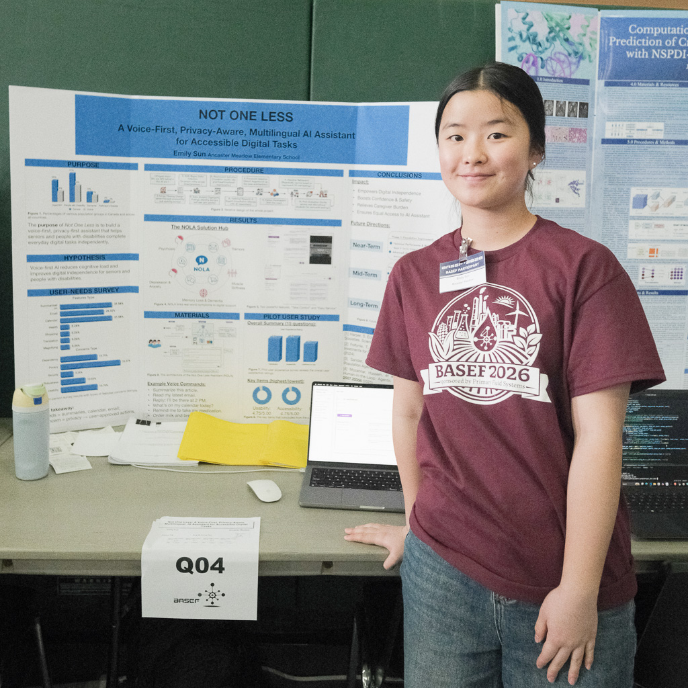
A voice that leaves no one behind
Artificial intelligence has reshaped how we work, study, and live — yet the aging population and people with disabilities are too often left out of its benefits, held back by accessibility barriers and privacy concerns. Not One Less closes that gap.
Voice-first
Natural speech commands replace complex typing, tapping, and navigation, reducing cognitive load.
Privacy-aware
Local processing, data minimization, and user-approved actions keep people in control at every step.
Multilingual
Language support extends access to non-English-speaking users so no one is excluded.
Our goal: help users manage email, summarize news, and update calendars through natural voice commands — safely, confidently, and independently. The final software will be shared for free.
Digital tasks shouldn't be a barrier
As essential services move online, many seniors and individuals with disabilities face physical and cognitive challenges that make navigating technology difficult — limiting their independence. Existing assistive tools are often costly, complex, and hard to personalize.
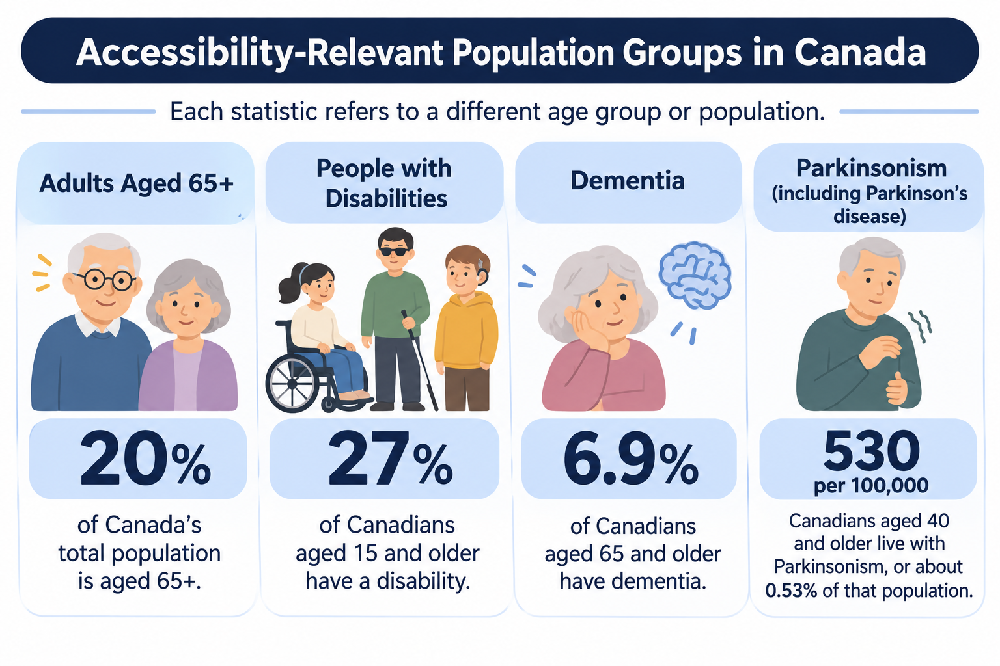
Meet NOLA — the Not One Less Assistant
NOLA is a human-centered AI assistant built on Microsoft Research's Magentic-UI framework and extended with voice interaction, tool integrations, and safety mechanisms.
Speech-to-text & text-to-speech
Transcribed commands are confirmed before acting, and answers can be spoken aloud.
Human-in-the-loop controls
Explicit approval before irreversible actions — sending email, sharing calendars, or placing orders.
Connected services
Gmail and Google Calendar integrations through Model Context Protocol (MCP) servers.
Private local execution
Isolated Docker containers and a VNC sandbox keep data processing local and secure.
Easy Service & Quick Chat
One-tap shortcuts to common tasks, plus low-latency conversational help.
Take Control
Users can pause, correct, or take over the assistant at any time.
- Summarize this article.
- Read my latest email.
- Reply: I'll be there at 2 PM.
- What's on my calendar today?
- Remind me to take my medication.
- Order milk and bread.
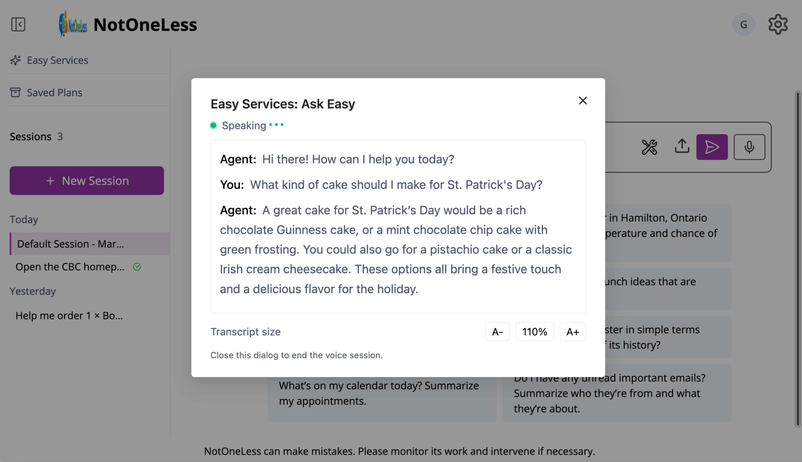
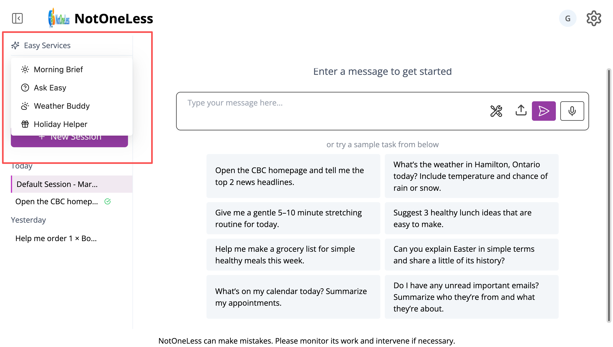
Watch NOLA in action
Seven real screen recordings show what NOLA can already do — from reading a bill aloud to ordering groceries hands-free. Pick a track to play it.
Built on real user needs
I conducted 19 in-person surveys with seniors and people with disabilities across Dundas, Hamilton, and London (plus online responses in English and French). Their priorities directly shaped NOLA's features.
The top concern was privacy — which is why NOLA requires user approval before every sensitive action.
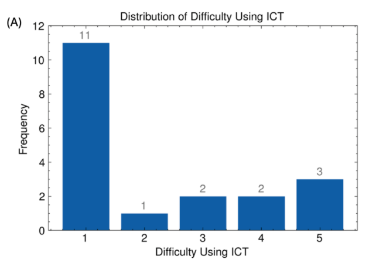
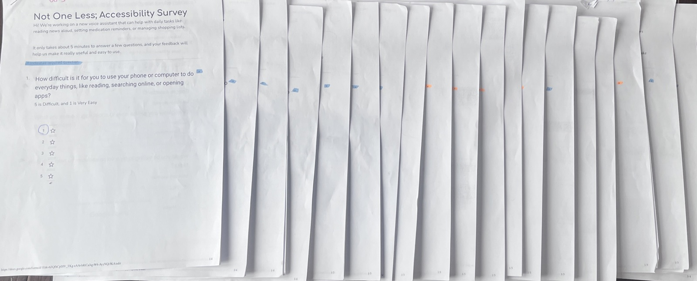
Validated with real users
After building NOLA, we invited users to test the assistant first-hand, then complete a follow-up user-experience survey. The results confirm that NOLA is easy, accessible, and helps people complete tasks more independently.
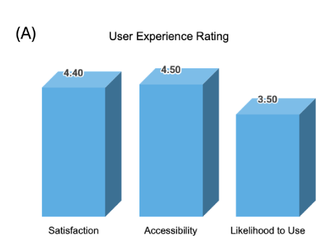
Pilot study (n=4): satisfaction & usability averaged 4.4/5, accessibility & comfort 4.5/5, and confidence in completing tasks 4.75/5.
Participants described NOLA as helpful, calming, connected, and convenient — while highlighting navigation speed as an area to keep improving.
Tested with real people, not just in theory
Beyond the code and the survey data, NOLA has been taken out into the world — demoed at the 2026 BASEF science fair and reviewed hands-on with older adults who shared their feedback, suggestions, and encouragement.
At the 2026 BASEF science fair
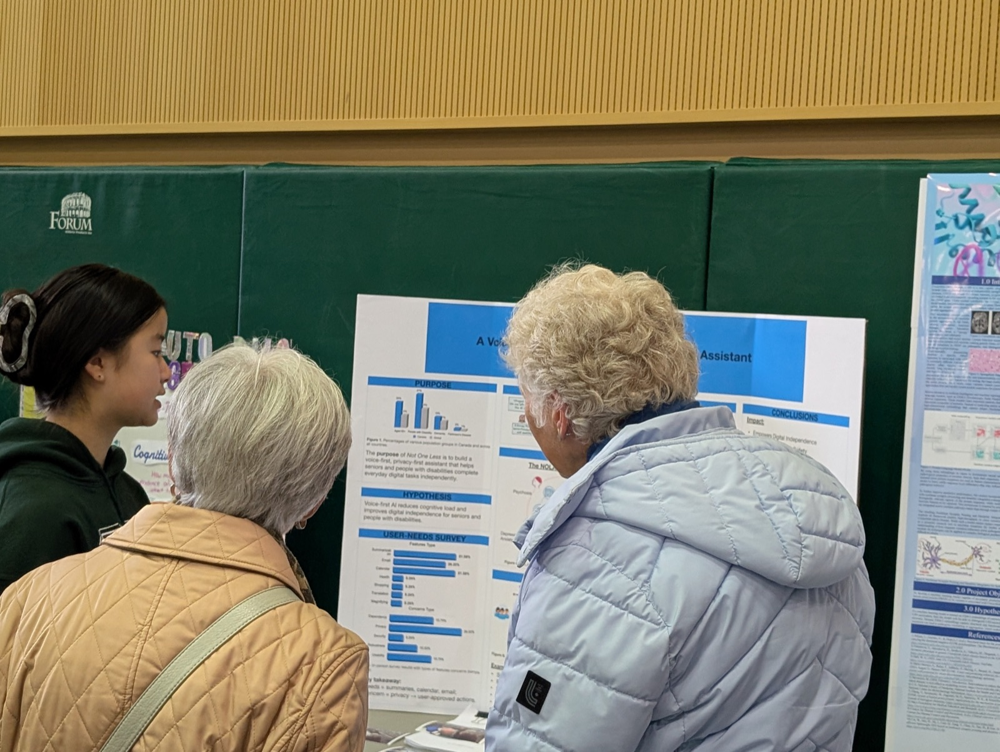
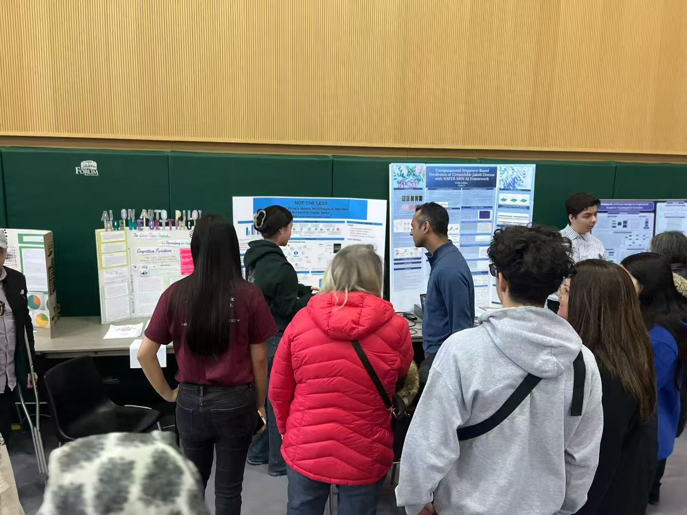
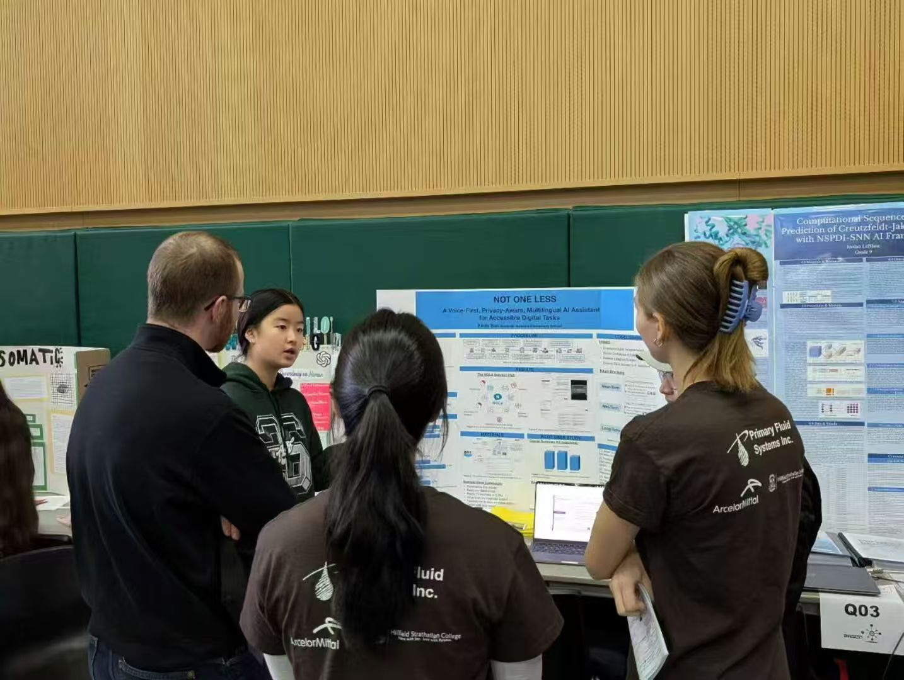
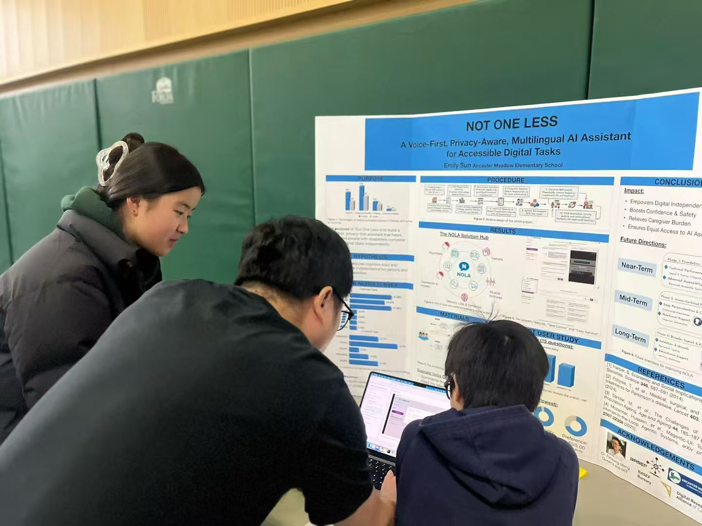
Reviewing NOLA with older adults and mentor
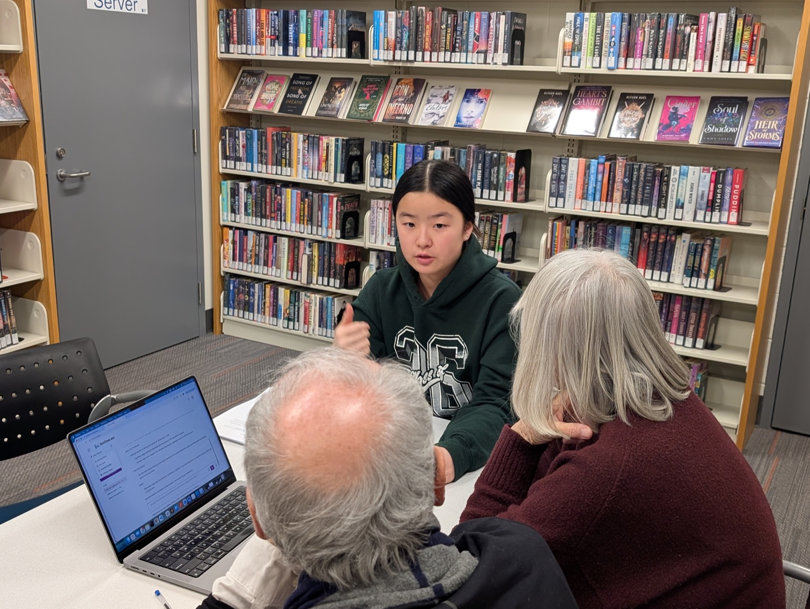
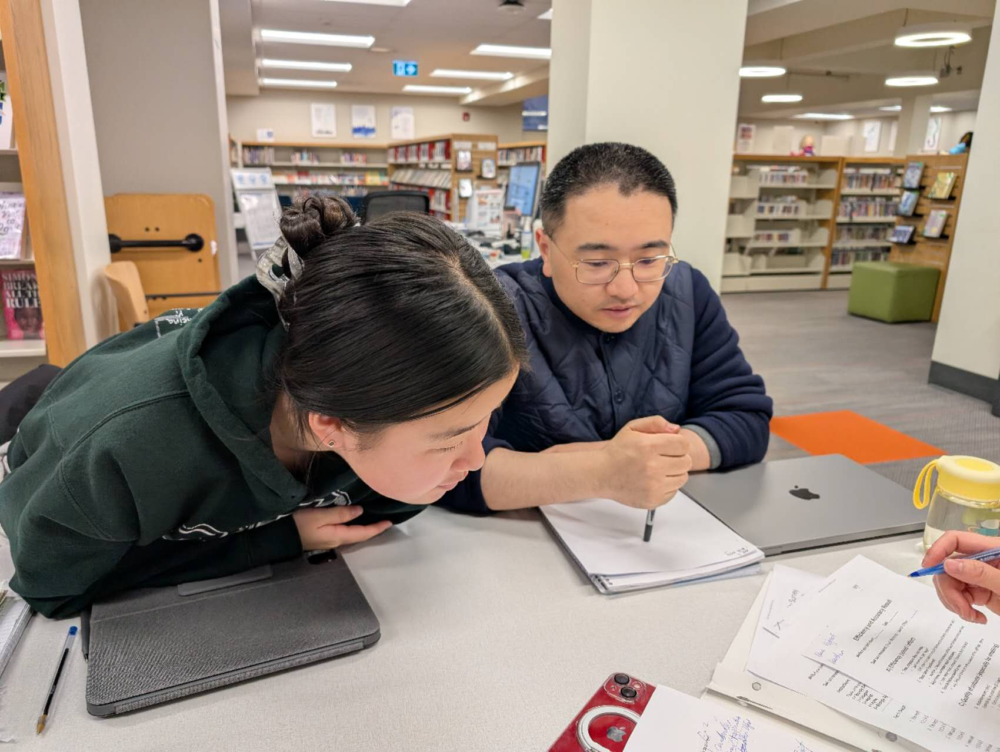
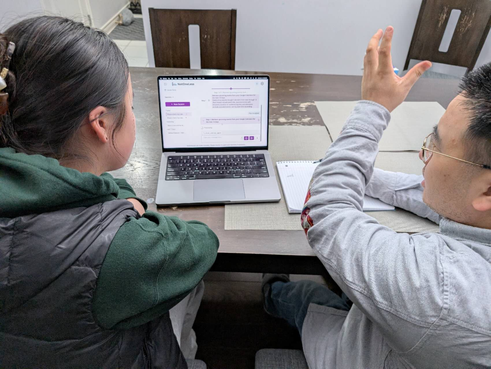
Where NOLA goes next
Near-term
Near-real-time responses with latency under five seconds to build trust and avoid confusion.
Mid-term
Highly adaptable visual interfaces, customizable voice interactions, and deep personalization.
Long-term
Consent-based memory and a companion-like persona to combat social isolation and support guided learning.
With heartfelt thanks
- Mentor: Dr. Fanwang Meng — Queen's University & MIT
- Teacher: Ms. Rebecca Mcewen — Ancaster Meadow Elementary School
- Support: My family — for a safe and supportive space to learn
- Opportunity: BASEF — for encouraging young students to explore science and give back
- Framework: Microsoft — for the open-source Magentic-UI framework and the open-source Fara-7B model that Not One Less is built on